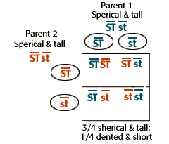

Dihybrid Cross
Problem 10: Exceptions to the 9:3:3:1 ratio of offspring?
Tutorial to help answer the question
If Mendel's crosses between tall, spherical-seeded plants and short, dented-seeded plants had produced many more than 1/16 short, dented-seeded plants in the F2 generation, he might have concluded that:
the spherical seed and tall traits are linked. |
F1 offspring of unlinked alleles
|
In a dihybrid cross between plants with tall stems and spherical seeds (both dominant) and plants with short stems and dented seeds, all of the F1-hybrid plants would have both dominant characteristics.
The dihybrid cross is SSTT x sstt. All F1-hybrids would be SsTt. |
F2 offspring for unlinked alleles
|
If the two traits are unlinked and the F1-plants are self-fertilized, in the F2 generation plants we expect the 9:3:3:1 ratio of offspring:
9/16 tall plants with spherical seeds (Review the tutorials for problem 2, problem 3, and/or problem 6 if necessary. |
F1 offspring for linked alleles
|
An excess of parental genotypes in the F2 generation (such as more than 1/16 short plants with dented seeds) can occur if the loci for the two traits are on the same chromosome, and linked to each other on the same DNA molecule.
If two traits are closely linked on the same chromosome, the alleles for the linked genes do not segregate during the formation of gametes. The two dominant alleles are linked on one chromosome, and the two recessive alleles are linked on the other, homologous chromosome. |
F2 offspring for linked alleles
|
We can use a Punnett Square to predict the outcome of this cross. The gametes of each parent will have the pairs of linked alleles, either ST or st. Since there are two combinations of alleles for each parent, we need a two square by two square Punnett Square. Fill out the Punnett Square to determine the genotype and phenotype for the offspring of a dihybrid cross when the traits are tightly linked.
Note that 3/4 of the offspring are predicted to have both dominant traits, and 1/4 are predicted to have both recessive traits. With unlinked traits, only 1/16 are predicted to have both recessive traits. |

|


University of Arizona
Tuesday, August 13, 1996
Contact the Development Team
http://biology.arizona.edu
All contents copyright © 1996. All rights reserved.